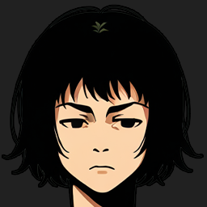
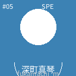
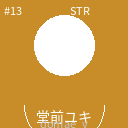

骨格は現行の直訴モーダルそのまま（派閥イベントと同じOfficeクリーム書式。U3統一済み）。
変更点は2つだけ — ①同行2名の選択を直訴と同じ紙面に統合（現行はYES後に別モーダル。3枚→2枚に短縮）
②発起人のセリフは現行どおり吹き出し(仮文言)。承認時はセリフ増補をOpus起案（判断メモ③）。
👥 団体戦挑戦の直訴
WEEK 12 ・ 3年目

HEAD COACH
社長、阿武隈選手から団体戦挑戦の直訴です。凰翔プロレスへ、私たち三人で挑みたい、と。
✈ 遠征興行
凰翔プロレスの会場へ乗り込みます
⚔ 3人制・シングル3連戦
あなたの団体から3名が出場します
社長、凰翔に三対三で挑ませてください。負けるつもりはありません。

阿武隈 塔子
団体戦の発起人
自あなたの団体
OVR88
PW95
SP73
TE71
VS

生駒 エリカ
第1試合の対戦相手
凰凰翔プロレス
OVR86
PW78
SP92
TE84
第1試合・先鋒対決 ／ 全3試合のシリーズ戦です
直近対戦 1勝1敗 — この二人の間には、まだ終わっていない宿題がある。
🚌 同行する2名を選ぶ
2 / 2 選択中

富岡加奈子
84
高津小春
81
澤出みずき
79

深町真琴
77
林真尋
75

堂前ユキ
72
中堅・大将はここで決める(現行はYES後の別画面)。負傷・休養中の選手は候補に出ません。
この直訴、受けますか？
A
この舞台、組もう
選んだ3名で、次の通常興行週に凰翔プロレスの会場へ遠征する
B
今は時期じゃない
この組み合わせでの再打診は、当分の間ない